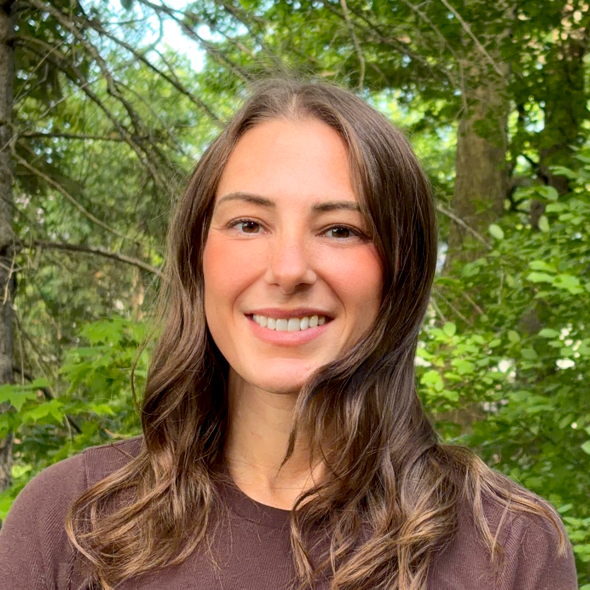

I'm completing a PhD in forestry (expected 2026) with a focus on forest entomology — specifically melittology, the study of native bees and how their communities use forest habitat. It's work built on complex, multi-site datasets that demand both rigorous statistics and clear communication.
Over a decade of field and analytical work has made me a specialist in spatial data, from plot-level inventory to province-wide habitat mapping using QGIS, R spatial packages, and remote sensing products.
I turn raw ecological data into decisions — analysis and interactive tools for conservation authorities, forestry clients, and municipalities, built on a decade of field and analytical work.
Work with me →Mixed models, diversity, trend analysis
Sampling, power analysis, indicators
Data wrangling, modelling, reproducible reporting
Interactive dashboards & data portals
Spatial analysis & cartography
GBIF, BBS, iNaturalist, municipal portals